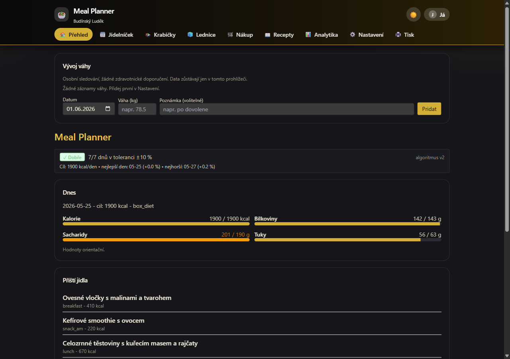
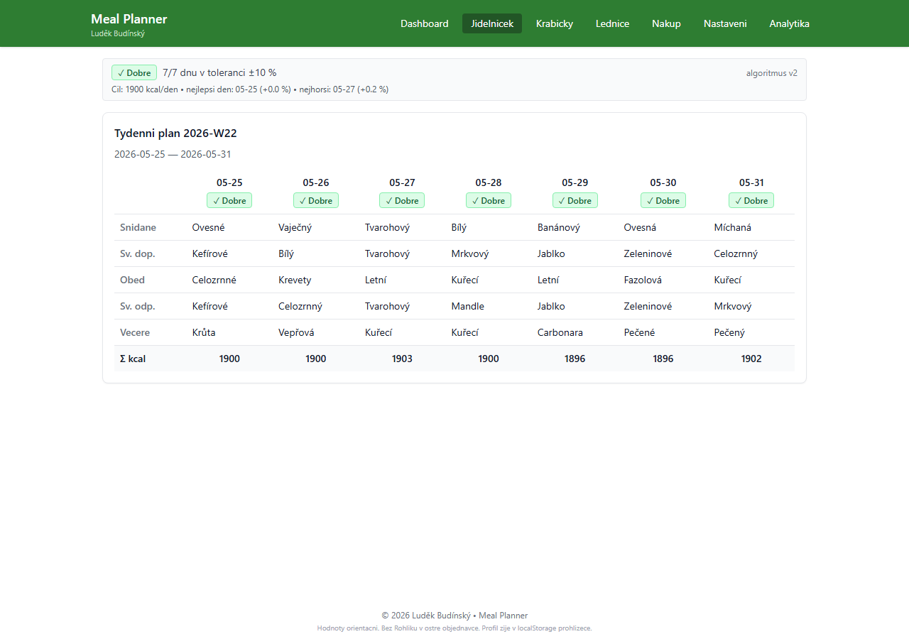
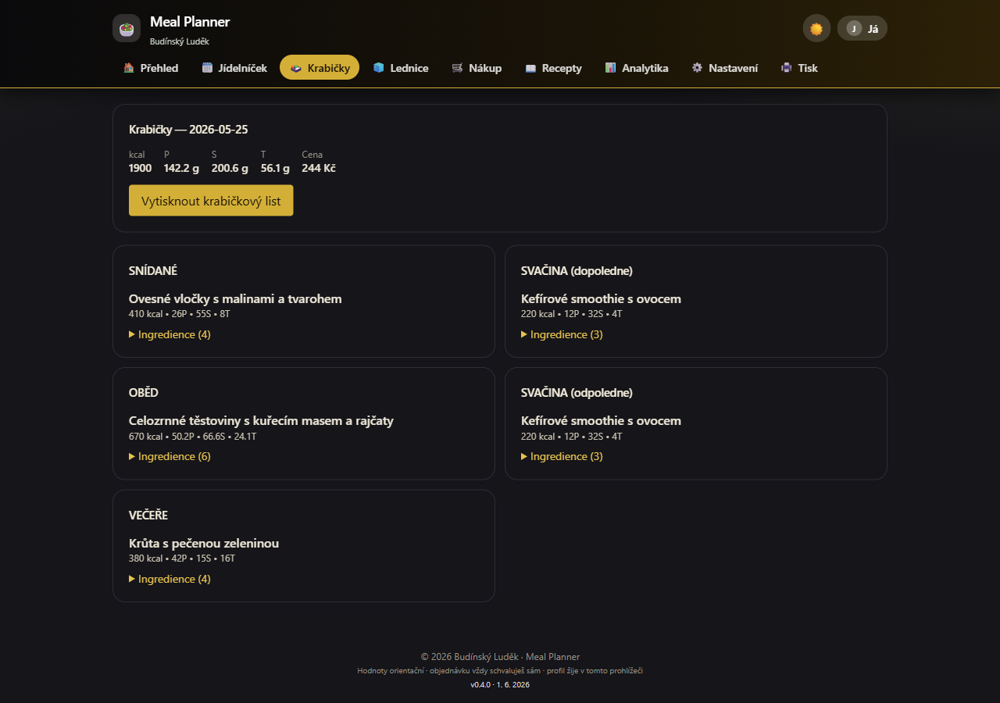
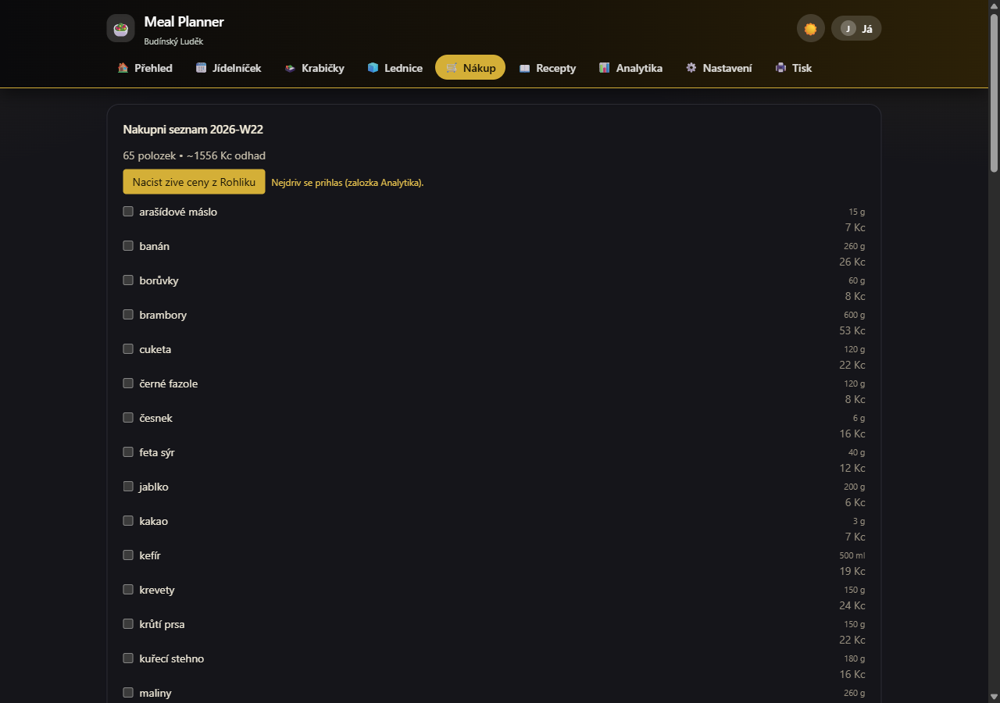
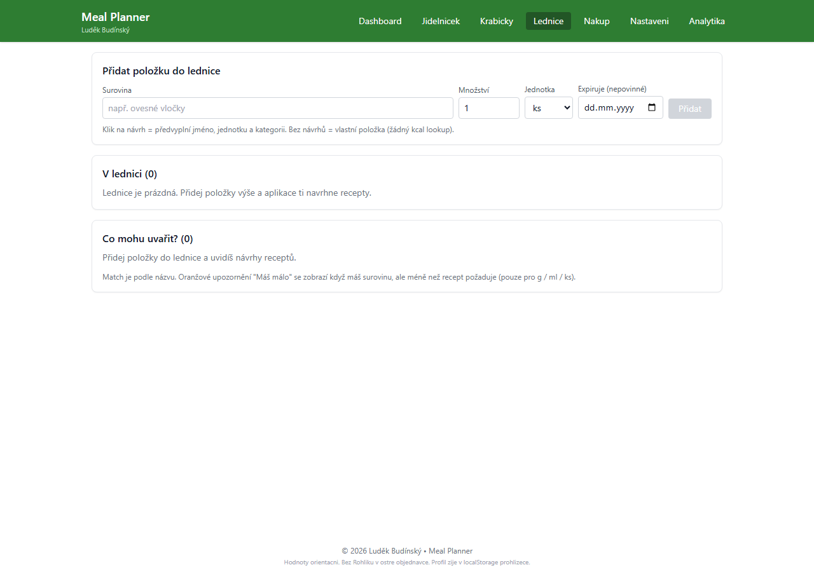
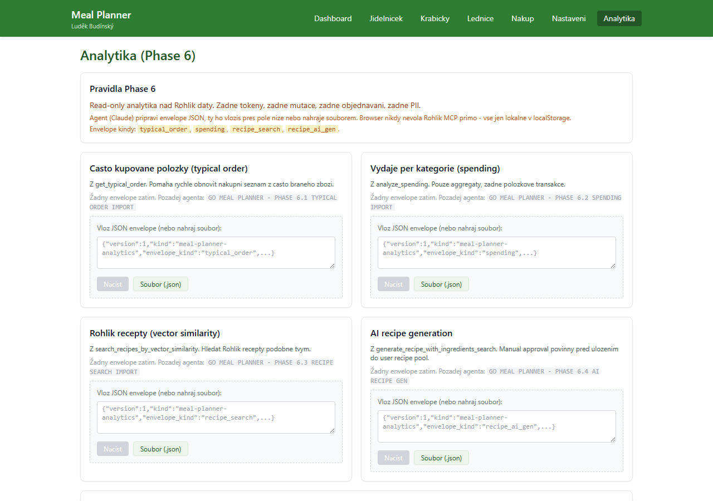
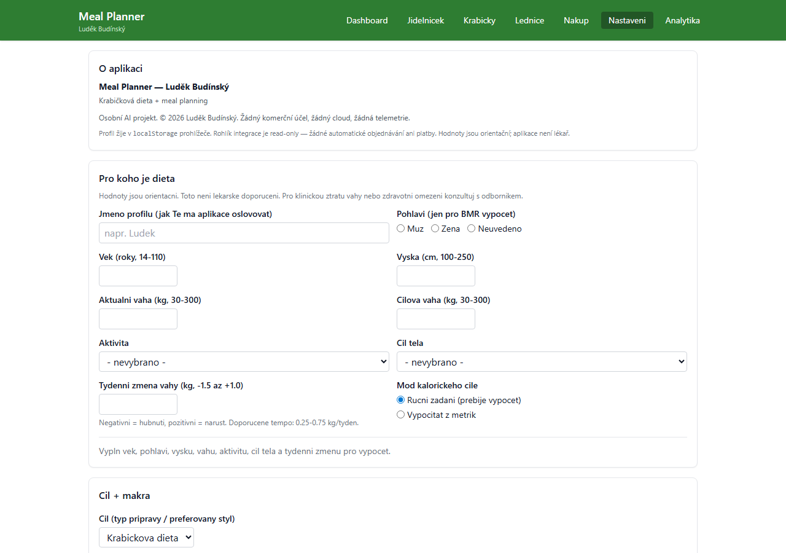
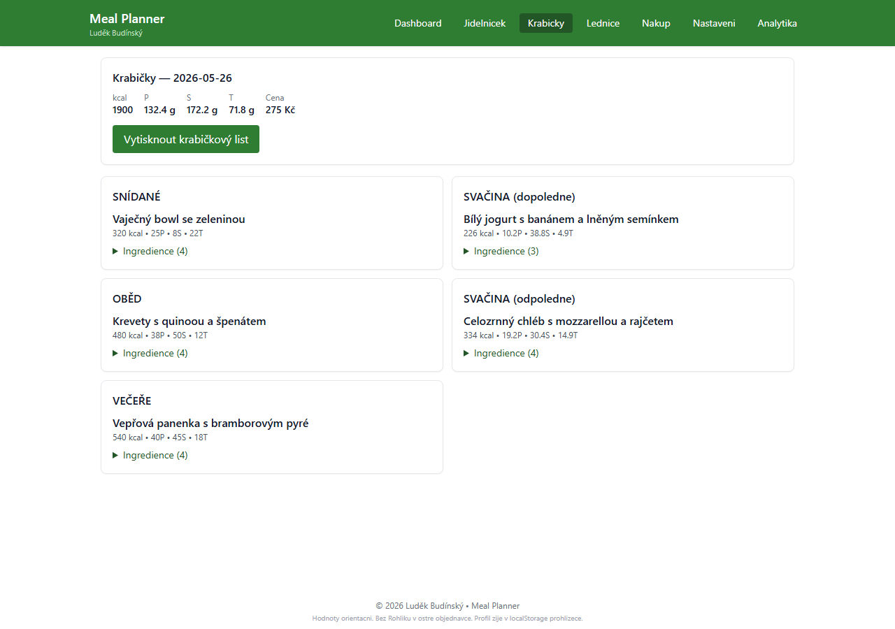

🍱Meal Planner
Osobní jídelníčkový plánovač pro počítání maker, sestavení týdenního jídelníčku, nákupní seznam a správu lednice. Funguje offline, žádné účty, žádné API klíče, žádné platby. Všechno lokálně v prohlížeči nebo jako Windows desktop apka.
React 18 TypeScript Vite 5 Tailwind CSS Windows (.exe) Tauri 2 PWA
Co to dělá
Proč to vzniklo: klasické nutričky tě nutí mít účet, neustále tě bombardují reklamami a jejich data nejsou tvoje. Chci jednoduchou appku, která bude fungovat offline, nebude posílat nic nikam a poběží i bez internetu — doma, v kempu, v autě.
Jeden uživatel, všechno lokálně: aplikace běží jako React SPA — v prohlížeči jako PWA nebo jako nativní Windows desktop apka (Tauri 2, NSIS instalátor ~1,1 MB). Data jsou výhradně v localStorage v prohlížeči. Žádný backend, žádný cloud, žádná registrace.
Makra a kalorický cíl: Nastavíš profil (váha, výška, věk, pohlaví, aktivita, cíl) a appka spočítá BMR/TDEE a doporučený příjem. Denní dashboard ukazuje kolik kcal / bílkovin / sacharidů / tuků máš na daný den naplánovaných vs. kolik je tvůj cíl — jednoduchými progress bary.
Týdenní jídelníček: Plánuješ jídla na každý den a slot (snídaně, svačina, oběd, svačina, večeře). Aplikace ti zobrazí makra pro celý den, porovná je s cílem a vypočítá odchylku. PlanQuality skóre ti řekne, jak dobře máš plán sestavený.
Krabičky: Pro každý recept vidíš, kolik krabičiček připravit (meal prep), co přesně koupit a jak se to promítne do týdenního jídelníčku. Recepty jsou staticky seedované (36 receptů), každý s kompletními makry a odhadovanou cenou.
Nákupní seznam: Agregátor z celého týdenního plánu. Seskupí ingredience podle kategorie, odečte co máš doma (lednice), zobrazí jen co doopravdy koupit.
Lednice (Fridge): Evidence co máš doma. Přidáš položku jménem (autocomplete z food_db), množstvím a jednotkou. Appka ti okamžitě řekne „Co mohu uvařit?" — zobrazí recepty seřazené podle toho, jak vysoké procento ingrediencí máš k dispozici. Nově (v0.7.1): fuzzy match v autocomplete (překlepy toleruje), kontrola množství (upozorní pokud máš surovinu ale málo), datum expirace s bannerem, dashboard widgety pro rychlý přehled.
Analytika a váha: Log váhy s grafem, kalorická odchylka (drift) za poslední dny, přehled výdajů na jídlo.
Klíčové funkce
- BMR / TDEE kalkulačka — Mifflin-St Jeor vzorec, 5 úrovní aktivity, cíle (deficit -20 % / udržení / surplus), doporučené makro rozdělení.
- Týdenní jídelníček s makry — 7 dní × 5 slotů, live součet kcal/P/S/T pro každý den, PlanQuality skóre (vyvážení maker, pokrytí cílů, variabilita).
- 36 seedovaných receptů — Každý recept má makra na porci, čas přípravy, alergeny, tagy a odhadovanou cenu. Recepty jsou čistě statická data — bez API, bez fetchů.
- Nákupní seznam z plánu — Automatická agregace ingrediencí z celého týdne, odečtení zásob z lednice, skupiny podle kategorie (zelenina, mléčné, maso, …).
- Lednice + recipe matcher — Evidence zásob s food_db lookup (emoji, kcal/100g, makra), fuzzy autocomplete (Levenshtein ≤2), řazení podle expirace, upozornění na nízké množství pro recept.
- Expiry banner — Položky expirující do 3 dnů se zobrazí barevným bannerem v horní části stránky Lednice i v dashboard widgetu.
- Kalorická odchylka (drift) — Sleduje odchylku od cíle za posledních N dní, zobrazí banner pokud je drift příliš velký.
- Log váhy s grafem — Denní záznamy váhy, sparkline graf vývoje, průměr za 7/30 dní.
- Funguje offline, multi-platform — Web PWA (Service Worker, přidej na plochu) + Windows nativní desktop apka (Tauri 2, NSIS instalátor ~1,1 MB, nainstaluje se jako klasická Windows apka).
- 225 unit testů — Vitest, 100% pass rate. Testuje makra, BMR/TDEE, plán, recipe matcher, fridge lookup, shopping aggregator, weight log, analytiky, Rohlik mock.
Náhledy








Stav
Funkční verze 0.2.0 (březen–květen 2026). Web PWA + Windows desktop .exe. Soukromé pro vlastní použití — žádné public hosting, žádné účty, žádné platby.
- v0.2.0 / Windows Tauri installer (28. 5. 2026) — Nativní Windows desktop apka (Tauri 2 + NSIS, ~1,1 MB). Instaluje se jako klasická Windows apka, data v localStorage jako webová verze. Bez Rustu, bez CLI závislostí pro uživatele.
- v0.2.0 / Phase 7.1+7.2+8.1 (28. 5. 2026) — Lednice: fuzzy autocomplete (Levenshtein ≤2), kontrola množství surovin s upozorněním "Máš málo", datum expirace v formuláři + řazení dle expirace + FridgeExpiryBanner (≤3 dny). Dashboard widgety: top 3 expirující položky + top 3 vařitelné recepty. 225/225 unit testů PASS.
- v0.2.0 / Phase 7.0 (duben 2026) — Lednice MVP: přidávání položek s autocomplete z food_db (emoji, kcal/100g), recipe matcher "Co mohu uvařit?" (coverage % seřazeno sestupně). Fridge storage + unit testy.
- v0.1.x (únor–duben 2026) — MVP fáze 1–6: profil, BMR/TDEE, týdenní jídelníček, krabičky, nákupní seznam, analytika, log váhy, kalorická odchylka, PlanQuality, 36 receptů.